This tutorial will show how to create a popup system that can be used to show messages and notifications for the user.
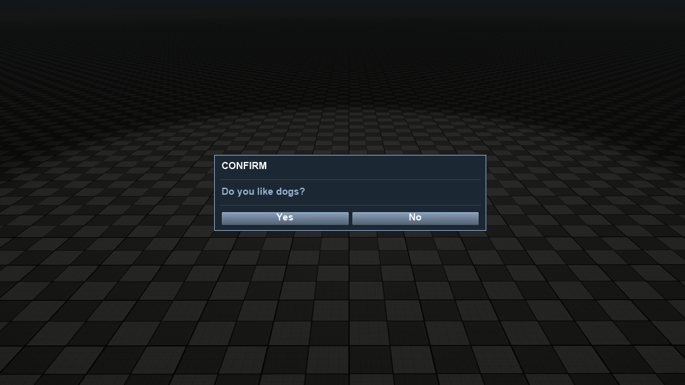
Initial Setup
This tutorial requires a level that will make the popups stand out against the background. The CSharp_Tutorial_UI_Popup_Assets.zip, and need to be extracted in the root folder of the project. These assets contain an example level which is called Example which has everything that's required for the tutorial. Alternatively, a new blank level can be created in the Sandbox.
To begin, a new PopupFactory class needs to be created. The PopupFactory will allow popups to be easily created by calling one of its methods.
using System;
using System.Collections.Generic;
using System.Linq;
using CryEngine.Rendering;
using CryEngine.UI;
namespace CryEngine.Game
{
public class PopupFactory
{
private Canvas _canvas;
public PopupFactory(Canvas canvas)
{
_canvas = canvas;
}
public void MakeTestPopup(string content)
{
}
}
}Then inside the Game class a Canvas and a PopupFactory will be created.
using System;
using CryEngine.Rendering;
using CryEngine.UI;
namespace CryEngine.Game
{
public class Game
{
private static Game _instance;
private Canvas _canvas;
private PopupFactory _popupFactory;
private Game()
{
// The server doesn't support rendering UI and receiving input, so initializing those system is not required.
if(Engine.IsDedicatedServer)
{
return;
}
//Only move to the map if we're not in the sandbox. The sandbox can open the map all by itself.
if(!Engine.IsSandbox)
{
Engine.Console.ExecuteString("map example", false, true);
}
}
public static void OnLevelLoaded()
{
_instance?.CreateUI();
}
private void CreateUI()
{
Mouse.ShowCursor();
_canvas = SceneObject.Instantiate<Canvas>(null);
_canvas.RectTransform.Size = new Point(Renderer.ScreenWidth, Renderer.ScreenHeight);
_popupFactory = new PopupFactory(_canvas);
}
public static void Initialize()
{
if(_instance == null)
{
_instance = new Game();
}
}
public static void Shutdown()
{
_instance._canvas.Destroy();
_instance = null;
}
}
}
Finally in Program.cs override the OnLevelLoaded function to notify the Game class when the level has been loaded. The UI is created after the level is loaded to prevent conflicts between the UI creating new textures while the engine is deleting textures while loading the level.
public override void OnLevelLoaded()
{
Game.OnLevelLoaded();
}Creating the Popup UI
Next, the UIPopup class will be created, which inherits from the Panel class. This will expose a Header and a Content property.
Creating the Panel
First a basic panel will be created where the contents of the popup will sit.
using System;
using System.Collections.Generic;
using CryEngine.Resources;
using CryEngine.UI;
using CryEngine.UI.Components;
namespace CryEngine.Game
{
public class UIPopup : Panel
{
private readonly Color DarkBlue = new Color(0.106f, 0.157f, 0.204f);
private readonly Color MediumBlue = new Color(0.603f, 0.708f, 0.822f);
private readonly Color LightBlue = new Color(0.573f, 0.678f, 0.792f);
public override void OnAwake()
{
base.OnAwake();
// Set the background color of the panel.
Background.Color = DarkBlue;
// Add a frame around the outside.
var frame = AddComponent<Image>();
var path = System.IO.Path.Combine(DataDirectory, "frame.png");
frame.Source = ResourceManager.ImageFromFile(path);
frame.SliceType = SliceType.Nine;
frame.Color = LightBlue;
// Set the size of the popup.
RectTransform.Size = new Point(425f, 120f);
RectTransform.Alignment = Alignment.Center;
}
}
}Images in the C# UI have a SliceType property. When an image is sliced, some parts of the image will be stretched as the image size is changed. This is particularly useful for textures with borders or patterns that tile along the center.
An image slice type has three possible values: ThreeHorizontal, ThreeVertical, and Nine. The diagram below shows how each slice type splits the image and how these slices get stretched.
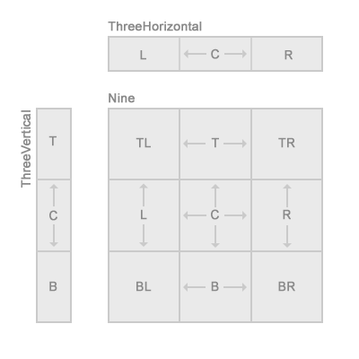
Back inside the PopupFactory, a method is added that will create an instance of a UIPopup.
private UIPopup MakePopup(string header, string content)
{
var popup = SceneObject.Instantiate<UIPopup>(_canvas);
return popup;
}The MakeTestPopup method is changed so it creates a new popup when it's called.
public void MakeTestPopup(string content)
{
MakePopup("Test Popup", content);
}And inside the Game class the following line is added to the CreateUI method so MakeTestPopup is called.
_popupFactory.MakeTestPopup("Hello world!");After compiling and running the game the popup will appear in the screen.
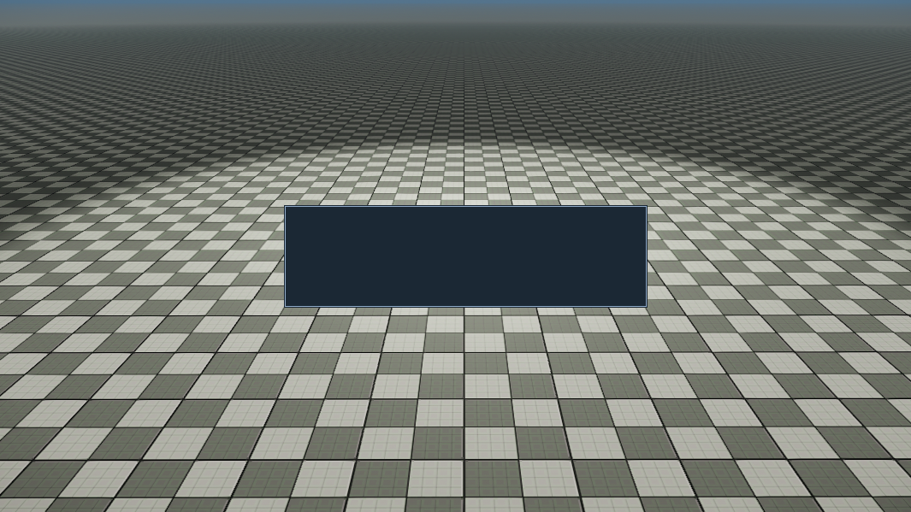
Adding a Header
The next step is to add a header to the popup along with some dividers.
To begin, a container is added to the UIPopup where the content will sit. It will be 20px smaller than the popup itself to create 10px padding on each side.
At the top of the UIPopup class, a private UIElement field is added.
private UIElement _innerContainer;At the end of the OnAwake method the inner container is instantiated.
// Create an inner container with 10px of padding around the outside.
// All other content will be a child of this container.
_innerContainer = Instantiate<UIElement>(this);
_innerContainer.RectTransform.Size = new Point(RectTransform.Width - 20f, RectTransform.Height - 20f);
_innerContainer.RectTransform.Alignment = Alignment.Center;Next a header will be added to the popup. This is done by adding the following fields at the top of UIPopup first.
private Text _header;
public string Header { set { _header.Content = value.ToUpper(); } }The Header property is used later on to set the value of the header when creating the popup.
Finally, the header text itself is created by adding the following to the OnAwake method.
// Create the header that appears at the top of the popup.
_header = _innerContainer.AddComponent<Text>();
_header.DropsShadow = false;
_header.Height = 18;
_header.FontStyle = System.Drawing.FontStyle.Bold;
_header.Alignment = Alignment.TopLeft;The namespace System.Drawing is located in the System.Drawing library, which is not referenced by the project by default. It can be manually added to the project by right-clicking on the References of the solution and selecting Edit References.... In the Edit References window use the search box to find System.Drawing and add it to the project by enabling it.
Now that the UI is updated, the MakePopup method in the PopupFactory will be changed to also specify the header text.
private UIPopup MakePopup(string header, string content)
{
var popup = SceneObject.Instantiate<UIPopup>(_canvas);
popup.Header = header;
return popup;
}After compiling and running the game a popup will now show up with text in the header.
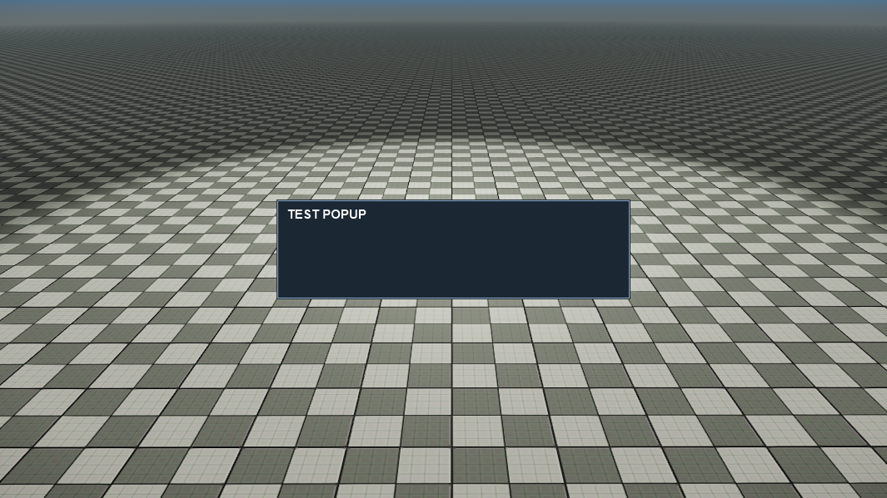
Adding Content
The popup still needs some content. Similar to the Header, for the content a private field and a public property are added to the top of the UIPopup class.
private Text _content;
public string Content { set { _content.Content = value; } }Inside the OnAwake method the Text will be created.
_content = _innerContainer.AddComponent<Text>();
_content.DropsShadow = false;
_content.Height = 18;
_content.FontStyle = System.Drawing.FontStyle.Bold;
_content.Alignment = Alignment.Left;
_content.Offset = new Point(0f, 0f);
_content.Color = MediumBlue;
Back inside PopupFactory, the MakePopup method is adjusted to also set the Content property.
private UIPopup MakePopup(string header, string content)
{
var popup = SceneObject.Instantiate<UIPopup>(_canvas);
popup.Header = header;
popup.Content = content;
return popup;
}After compiling and running the game the popup will now show in the game with a text in the header and the content-area.
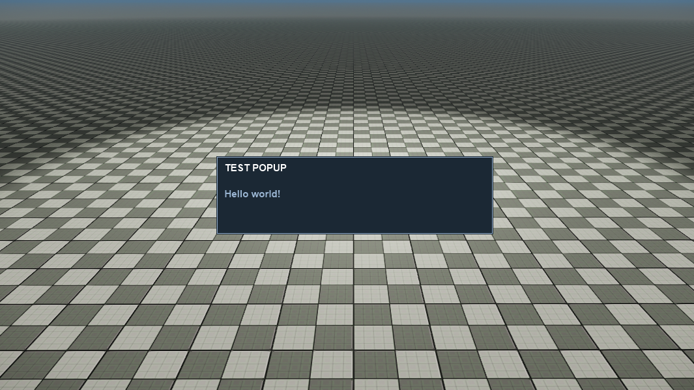
Adding buttons
The popup is still missing a way for the user to interact with them. To receive user input buttons will be added to the popup. The buttons will be added to a horizontal layout group so they're positioned automatically. Extra functionality will be added to automatically adjust the width of all the existing buttons to be evenly distributed when a new button is added.
Inside UIPopup the following will be added to the top of the class.
public event Action<UIPopup> Shown;
public event Action<UIPopup> Closed;
private HorizontalLayoutGroup _buttonGroup;
private List<Button> _buttons;At the end of the OnAwake method, the following is added to create a HorizontalLayoutGroup for the buttons and to initialize the List<Button>.
_buttonGroup = Instantiate<HorizontalLayoutGroup>(_innerContainer);
_buttonGroup.RectTransform.Size = new Point(_innerContainer.RectTransform.Width, 20f);
_buttonGroup.RectTransform.Alignment = Alignment.Bottom;
_buttonGroup.RectTransform.Pivot = new Point(0.5f, 0f);
_buttons = new List<Button>();The following method is added which will handle instantiating buttons. The buttons on the popup are automatically resized to fit all the added buttons. The width of each button is set to be equal to the width of the popup's inner container divided by the number of buttons added to the popup.
public void AddButton(string label, Action onPress)
{
// Instantiate a button
var button = Instantiate<Button>(_buttonGroup);
button.RectTransform.Size = new Point(_buttonGroup.RectTransform.Width, 30f);
button.RectTransform.Alignment = Alignment.Left;
button.RectTransform.Pivot = new Point(1f, 0.5f);
button.Ctrl.Text.Content = label;
button.Ctrl.Text.Height = 18;
button.Ctrl.Text.FontStyle = System.Drawing.FontStyle.Bold;
button.Ctrl.Text.DropsShadow = false;
button.Background.Color = MediumBlue;
// Store a reference to the button.
_buttons.Add(button);
// Set width based on number of buttons.
var width = _innerContainer.RectTransform.Width;
_buttons.ForEach(x => x.RectTransform.Width = width / _buttons.Count);
// Add the button to the horizontal group.
_buttonGroup.Add(button);
}
The last thing that needs to be assigned is the onPress callback which is added to the button's OnPressed event. This is achieved by adding the following to the end of the AddButton method.
button.Ctrl.OnPressed += () =>
{
Closed?.Invoke(this);
onPress?.Invoke();
};Back inside the PopupFactory, the MakeTestPopup method is modified to add the extra buttons.
public void MakeTestPopup(string content)
{
var popup = MakePopup("Test Popup", content);
popup.AddButton("Yes", null);
popup.AddButton("No", null);
}
After the game is compiled and running the two newly added buttons will show up at the bottom of the popup.
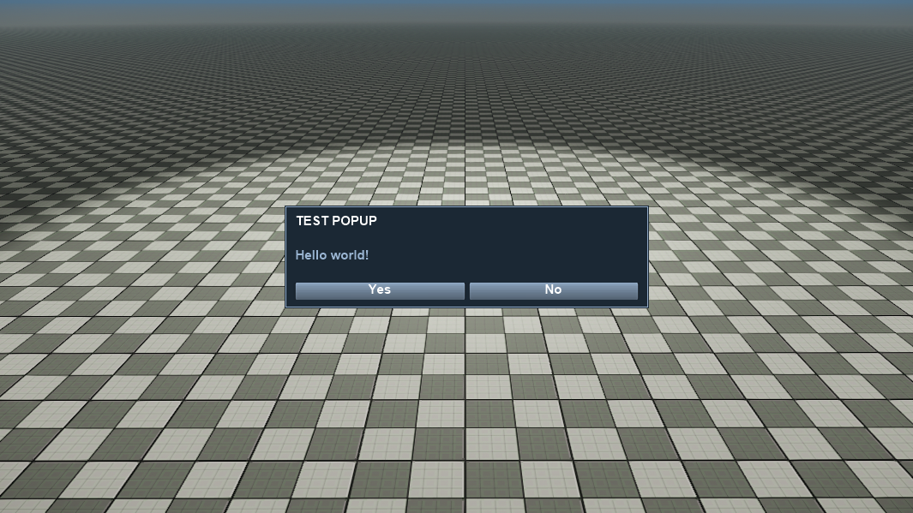
Adding Dividers
For the final bit of UI, a divider will be added below the header and above the buttons.
The following method is added to the UIPopup.
private UIElement AddDivider(UIElement root)
{
var divider = Instantiate<Panel>(root);
divider.RectTransform.Size = new Point(_innerContainer.RectTransform.Width, 1f);
divider.AddComponent<Image>().Color = LightBlue.WithAlpha(0.2f);
return divider;
}This will create a 1px high Panel that is the width of the popup's inner container.
Inside the OnAwake method two new lines are added which will create the dividers.
// Create a divider under the header.
var topDivider = AddDivider(_innerContainer);
topDivider.RectTransform.Alignment = Alignment.Top;
topDivider.RectTransform.Padding = new Padding(0f, 30f);
// Create a divider above the buttons.
var bottomDivider = AddDivider(_innerContainer);
bottomDivider.RectTransform.Alignment = Alignment.Bottom;
bottomDivider.RectTransform.Padding = new Padding(0f, -30f);After compiling and running the game the popup will now have two dividers.
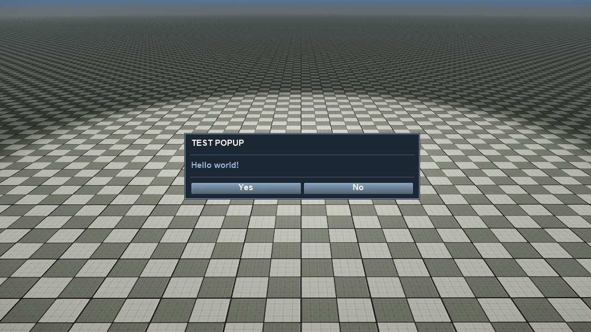
Implementing an Info popup
Now that the popup UI is in place, a functional Info popup can be created.
The popup system only allows one popup to be display at any one time. If other popups are shown at the same time, they need to be hidden but also flagged appropriately so that when the current popup is closed, the next popup waiting to be shown will be displayed.
To begin some modifications need to be made to the UIPopup.
At the top of the class the following property is added.
public bool FlaggedForShow { get; private set; }Next the following two methods which will trigger the Shown and Closed events are added.
public void Show()
{
FlaggedForShow = true;
Shown?.Invoke(this);
}
public void Close()
{
FlaggedForShow = false;
Closed?.Invoke(this);
}Inside the PopupFactory, the Shown and Closed events are hooked in to display and destroy the popup.
It is also necessary to keep track of when a popup is added and removed. That way when a popup is closed any remaining popups that are in the system will be shown.
First at the top of the class a List<UIPopup> is created.
private List<UIPopup> _popups = new List<UIPopup>();The MakePopup method functionality is also extended to make it add callbacks to the Shown and Closed events.
private UIPopup MakePopup(string header, string content)
{
var popup = SceneObject.Instantiate<UIPopup>(_canvas);
popup.Header = header;
popup.Content = content;
// Register popup.
popup.Shown += OnShowPopup;
popup.Closed += OnClosePopup;
_popups.Add(popup);
popup.Active = false;
return popup;
}And the associated handlers are added.
private void OnShowPopup(UIPopup popup)
{
Mouse.ShowCursor();
// Display popup then bring it to front.
popup.Active = true;
popup.SetAsLastSibling();
}
private void OnClosePopup(UIPopup popup)
{
Mouse.HideCursor();
// Unregister popup.
popup.Shown -= OnShowPopup;
popup.Close -= OnClosePopup;
_popups.Remove(popup);
popup.Destroy();
// Find a popup that is waiting to be shown.
var nextPopup = _popups.FirstOrDefault(x => x.FlaggedForShow == true);
if (nextPopup != null)
{
// Show the next popup waiting to be shown.
nextPopup.Show();
}
else
{
// If there's no popup to show the mouse can be hidden.
Mouse.HideCursor();
}
}And a new method is added that will create the info popup.
public UIPopup MakeInfoPopup(string content, Action onOkay = null)
{
var popup = MakePopup("Confirm", content);
popup.AddButton("Okay", onOkay);
return popup;
}Back in the Game class, the MakeTestPopup line needs to be replaced with the following.
Action callback = () => Log.Info("You acknowledge this and become deeply moved.");
var popup = _popupFactory.MakeInfoPopup("Something important just happened!", callback);
popup.Show();Note that we now have to explicitly called Show to display the popup.
After compiling and running the game the following popup will appear. Clicking the button will cause the popup to close.
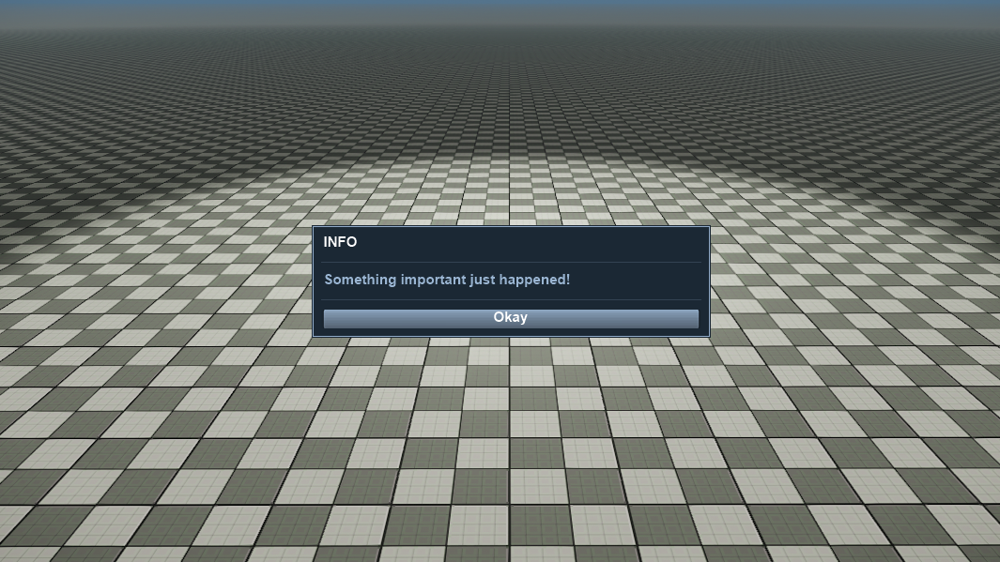
A message was also logged in the console when the button was pressed.
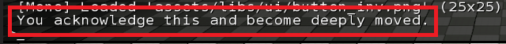
Adding a Background Panel
Now that a basic system is in place, the next step will be to show a transparent black panel behind the popup when it is shown to help distinguish the popup from the underlying UI.
The following field is added to the top of the PopupFactory class.
private Panel _panel;Then in the constructor of the PopupFactory a Panel is instantiated with a black background.
public PopupFactory(Canvas canvas)
{
_canvas = canvas;
_popups = new List<UIPopup>();
_panel = SceneObject.Instantiate<Panel>(_canvas);
_panel.Background.Color = Color.Black.WithAlpha(0.8f);
_panel.RectTransform.Size = new Point(Renderer.ScreenWidth, Renderer.ScreenHeight);
_panel.RectTransform.Alignment = Alignment.Center;
_panel.Active = false;
}As the panel starts inactive, some logic is needed that will enable it. The Active state of the panel will be changed when a popup is shown and closed.
The OnShowPopup method is modified to achieve this.
private void ShowPopup(UIPopup popup)
{
Mouse.ShowCursor();
// Enable then bring the panel to front.
_panel.Active = true;
_panel.SetAsLastSibling();
// Display popup then bring it to front.
popup.Active = true;
popup.SetAsLastSibling();
}And the OnClosePopup method is modified to deactivate the panel again.
// Find a popup that is waiting to be shown.
var nextPopup = _popups.FirstOrDefault(x => x.FlaggedForShow == true);
if (nextPopup != null)
{
// Show the next popup waiting to be shown.
ShowPopup(nextPopup);
}
else
{
Mouse.HideCursor();
_panel.Active = false;
}After compiling and running the game the popup now shows with a background panel behind it. When the popup is closed, the background panel will also disappear.
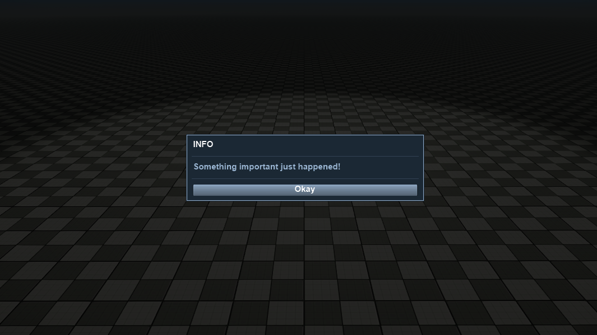
Implementing additional popups
With the groundwork in place, additional popups can be easily implemented. In the PopupFactory a new method that will create a Yes/No style popup can be added.
public UIPopup MakeConfirmationPopup(string content, Action onYes, Action onNo = null)
{
var popup = MakePopup("Info", content);
popup.AddButton("Yes", onYes);
popup.AddButton("No", onNo);
return popup;
}Or a Yes/No/Cancel style popup can be added.
public UIPopup MakeConfirmationCancelPopup(string content, Action onYes, Action onNo, Action onCancel)
{
var popup = MakePopup("Confirm", content);
popup.AddButton("Yes", onYes);
popup.AddButton("No", onNo);
popup.AddButton("Cancel", onCancel);
return popup;
}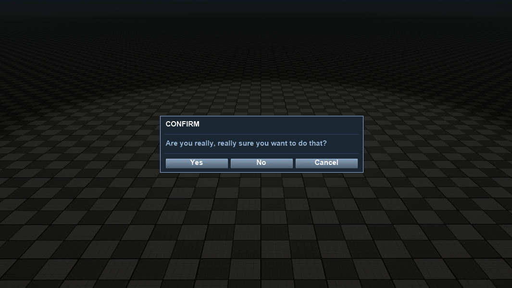